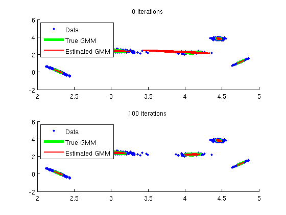

ISP_GMMDEMO Demonstration that uses the Gaussian mixture model functions.
nSamples=1000; nMixtures=5; nDim=2; rand('state', 0) randn('state', 0)
First, we randomly create a reference GMM
trueGmm.type = 'gmm'; trueGmm.diagonal = false; trueGmm.nMixtures = nMixtures; for n=1:nMixtures tmp = .1*randn(nDim, nDim); trueGmm.covariance(1:nDim, 1:nDim, n) = tmp*tmp'; end trueGmm.mean = 5*rand(nDim, nMixtures); tmp = rand(nMixtures,1); trueGmm.weight = tmp/sum(tmp);
Next, we draw random vectors according to the true GMM
vectors = isp_gmmrand(trueGmm,nSamples);
Finally, we use different numbers of iterations to estimate the GMM from the random vectors and plot the estimates
nIterations = [0 100]; for iIterations=1:length(nIterations) % Set GMM training options options.diagonal = false; options.maxIterations = 500; options.nIterations = nIterations(iIterations); options.nMixtures = nMixtures; options.silent = true; % Estimate GMM estimatedGmm = isp_gmmtrain(vectors,options); % Plot data and ellipses corresponding to the standard deviation the % true and estimated Gaussians, respectively subplot(length(nIterations), 1, iIterations); hold all scatter(vectors(1,:),vectors(2,:),'.'); lineWidths = [4 2]; colors = {'g', 'r'}; % Plot something immediately to make 'legend' show the right things for n=1:length(colors); plot(inf, inf, colors{n}, 'LineWidth', lineWidths(n)); end gmms = [trueGmm estimatedGmm]; angles = 0:.1:2*pi; for jGmm=1:length(gmms) for n=1:nMixtures cov = gmms(jGmm).covariance(:,:,n); gaussEllipsis = sqrtm(cov)*[cos(angles); sin(angles)] + ... repmat(gmms(jGmm).mean(:, n), 1, length(angles)); plot(gaussEllipsis(1,:), gaussEllipsis(2, :), colors{jGmm}, 'LineWidth', lineWidths(jGmm)) end end title([num2str(nIterations(iIterations)) ' iterations']) legend('Data', 'True GMM', 'Estimated GMM', 'Location', 'NorthWest') end
| Intelligent Sound Processing Toolbox | Contents |